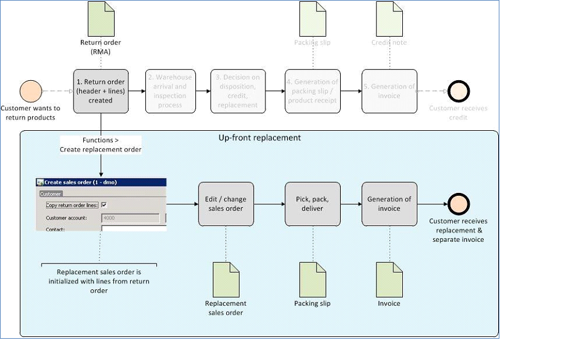
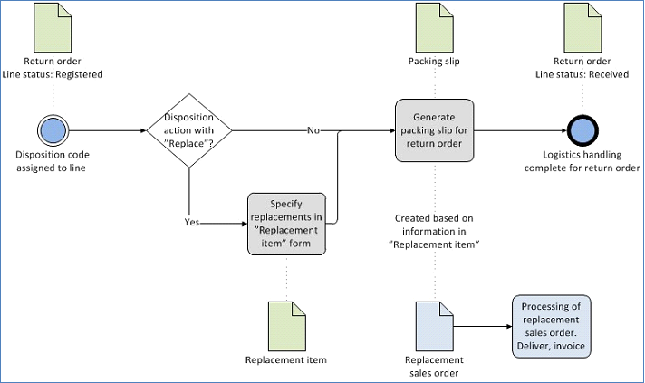
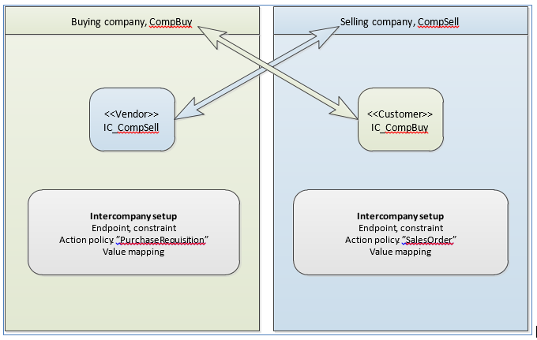
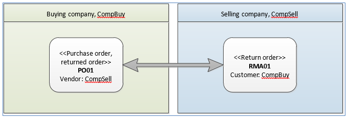
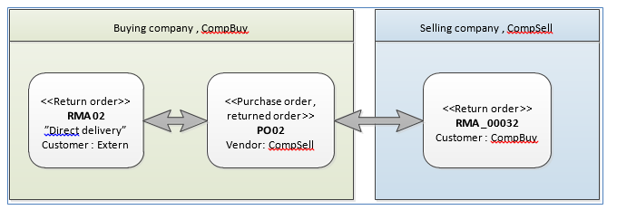
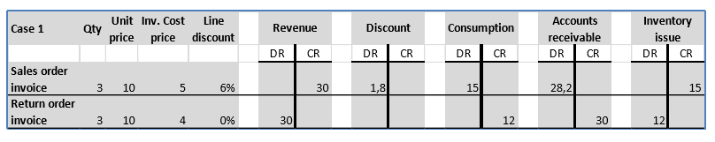
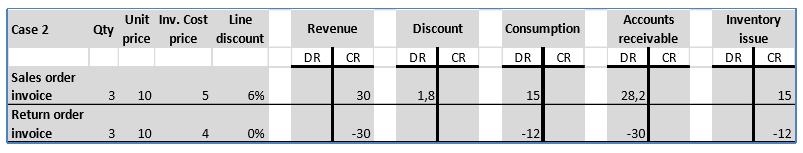
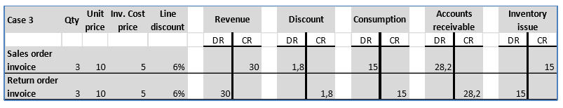

Retouren
Important
Dynamics 365 for Finance and Operations hat sich zu speziell entwickelten Anwendungen entwickelt, mit denen Sie bestimmte Geschäftsfunktionen verwalten können. Weitere Informationen zu diesen Änderungen finden Sie im Dynamics 365-Lizenzierungshandbuch.
Die Themen dieses Abschnitts enthalten Informationen zu Rücklieferungen. Er umfasst Informationen zu einer Rücksendung und ihren Auswirkungen auf Nachkalkulations- und Lagerbestandmengen.
Debitoren können Rückgabeartikel unterschiedlichen Gründen vornehmen. So kann ein Artikel fehlerhaft sein, oder er entsprach möglicherweise nicht den Erwartungen des Debitors. Die Rücklieferungen starten wenn Debitoren eine Artikelrückgabe anfordern. Nach Eingang der Kundenanfrage wird ein Rücklieferungsauftrag erstellt.
Rücklieferungsprozess
Die folgende Abbildung bietet eine Übersicht über den Rücklieferungprozess.
{kind=link}
Es gibt zwei Typen von Rücklieferungsprozessen: Physische Rückgabe und nur Gutschrift
- Physische Rückgabe – Die Rücklieferung autorisiert die physische Rücklieferung von Produkten.
- Nur Gutschrift – Die Rücklieferung autorisierte keine Debitorengutschrift, erfordert jedoch nicht die Rückgabe des Debitors der physischen Produkte.
Prozess für physische Rückgabe
- Erstellen einer Rücklieferung Dokumentieren Sie die Autorisierung für den Debitor zur Rückgabe aller fehlerhaften oder unerwünschte Produkten formal. Die Rückgabe erfordert nicht, dass das Unternehmen die zurückgegebenen Produkte akzeptieren oder eine Gutschrift für den Debitor erstellt. Wenn die Rücklieferungen akzeptiert wird, können Sie einen Ersatzartikel autorisieren, der für den fehlerhaften Artikel gesendet wird.
- Eintreffen am Lagerort zur Prüfung. Führen Sie eine erste Prüfung eine Inspektion anhand des Rücklieferungsdokuments durch. Die Rückgabe unterstützt außerdem eine Quarantäne der zurückgelieferten Artikel für zusätzliche Prüfung und Qualitätskontrolle.
- Bestimmen der Disposition. Hiermit wird der Prüfungsprozess abgeschlossen. Es wird entschieden, wie mit dem zurückgelieferten Produkte verfahren werden soll. Im Rahmen dieses Schritts entscheiden Sie, ob Sie den Debitor die Produktrücklieferung gutgeschrieben werden, ob die Rückgabe abgelehnt oder angenommen wird, ob die Produktrücklieferung verschrotten wird, und senden anschließend ein Ersatzprodukt an den Debitor.
- Lieferschein generieren Generieren Sie einen Lieferschein und die legen Sie die Dispositionsentscheidung fest, die Sie in Schritt 3 getroffen haben. Abschließen des Logistikprozesses.
- Rechnung generieren. Schließen des Rücklieferungsauftrags.
Prozess für nur Gutschrift
- Erstellen einer Rücklieferung Dokumentieren Sie die Autorisierung für den Debitor zur Rückgabe aller fehlerhaften oder unerwünschte Produkten und zum Erhalt einer Gutschrift formal. Der Nur Gutschrift Dispositionscode autorisiert die Entscheidung dem Debitor ohne physische Rücklieferung eine Gutschrift zu bieten.
- Rechnung generieren. Generieren Sie die Gutschrift, und schließen Sie die Rücklieferung.
Rücksendungsnummer
Die Verarbeitung der Rücksendungsnummer basiert auf der Auftragsfunktionen. Die Rücksendungsnummer wird erfasst als Rücklieferung, die als Auftrag erstellt wird, und kann einen anderen Auftrag zugewiesen haben (Ersetzungsauftrag). Beide Aufträge sind mit der Rücksendungsnummer verknüpft.
- Rücklieferung – Um eine Rücksendungsnummer zu registrieren, erstellen Sie eine Rücklieferung, die ein Auftrag ist, der den Typ Zurückgegebener Auftrag hat. Alle Änderungen, die Sie an den Rücksendungsinformationen vornehmen, werden automatisch im Auftrag aktualisiert. Bis die Rücklieferung den Status Offen aufweist wird sie nicht in der Liste mit den Aufträgen angezeigt. Rücksendungsnummern verwenden Sie, um den Eingang und Zugang der zurückgelieferten Artikel zu verarbeiten, sowie eine Dispositionsaktivität vom Typ Dispositionscodes und Dispositionsaktionen. Alle anderen Folgeprozesse müssen im Auftrag ausgeführt werden.
- Ersatzauftrag – Wenn ein Ersatzauftrag an den Debitor gesendet werden muss, kann die Rücksendungsnummer einen weiteren zugehörigen Auftrag enthalten. Sie können den Ersatzauftrag manuell erstellt, sodass die Rücksendungsnummer eine umgehende Lieferung unterstützt. Alternativ kann der Ersatzauftrag automatisch erstellt werden, sobald beim Zugang, Prüfung und Beleg für den Rücksendungspositionsartikel abgeschlossen sind, der einen Dispositionscode hat, der einen Ersatz angibt. Der Ersetzungsauftrag hat die gleichen Funktionen, die einem Auftrag zugeordnet sind. Beispielsweise können Sie sie verwenden, um ein benutzerdefiniertes Produkt als der Ersetzungsartikel zu konfigurieren, einen Produktionsauftrag für die Reparatur eines zurückgelieferten Artikels zu erstellen, eine Direktlieferungsbestellung als Ersatz zu erstellen oder andere Zwecke zu unterstützen.
Erstellen einer Rücklieferung
Der Rücklieferungsprozess startet wenn der Debitor Ihre Organisation kontaktiert, um ein fehlerhaftes oder unerwünschtes Produkt zurückzusenden und/oder gutzuschreiben. Nachdem die Organisation die Rücklieferung akzeptiert, wird die Rücklieferung über eine Rücklieferung dokumentiert. Diese wird zum Fokuspunkt bei der internen Verarbeitung der Rücklieferung des zurückgegebenen Produkts. Die folgende Abbildung zeigt die Verfahren zum Erstellen einer Rücklieferung.
{kind=link}
Erstellt eine neue Rücklieferungskopfzeile
Wenn Sie eine Rücklieferung erstellen, müssen die Informationen in der folgenden Tabelle enthalten sein.
| Feld | Beschreibung | Kommentare |
|---|---|---|
| Debitorenkonto | Eine Referenz auf die Tabelle "Debitoren" | Sie müssen ein vorhandenes Debitorenkonto angeben. |
| Lieferadresse | Die Adresse, an die der Artikel zurückgegeben wurde. | Standardmäßig wird die Adresse der Organisation verwendet. Wenn ein bestimmter Lagerort im Kopf ausgewählt ist, wird die Lieferadresse auf die Lieferadresse des Lagerorts geändert. Sie können dieser Adresse auf der Rücklieferungsdetails Seite ändern. |
| Standort/Lagerort | Der Standort oder Lagerort, an den das Produkt zurückgegeben wird | Die Lieferadresse für die Rücklieferung wird die Lieferadresse auf Grundlage des Standorts oder des Lagerorts bestimmt. |
| Rücksendungsnummer | Die ID, die der Auftragsrücksendung zugeordnete wird. | Die Rücksendungsnummer wird als Alternativschlüssel während des Rücklieferungsprozesses verwendet. Die Rücksendenummer wird automatisch basierend auf dem Rücksendenummer-Nummernkreis (unter Debitorenkontenparameter) zugewiesen. |
| Frist | Das letzte Datum an dem ein Artikel zurückgegeben werden kann | Der Standardwert wird als aktuelles Datum zuzüglich des Gültigkeitszeitraums berechnet. Wenn beispielsweise eine Rücklieferung für nur 90 Tagen gültig ist ab dem Datum an dem die Rücklieferung erstellt wird, und die Rückgabe am 1. Mai erstellt wurde, id der Wert im Feld der 30. Juli. Der Gültigkeitszeitraum ist auf die Debitorenparameter Seite festgelegt. |
| Ursachencode für Rückgabe | Der Grund des Debitors für die Rücklieferung der Artikel. | Der Ursachencode wird in der Liste mit benutzerdefinierten Ursachencodes ausgewählt. Sie können den Wert in diesem Feld jederzeit aktualisieren. |
Rücklieferungspositionen erstellen
Nachdem Sie den Rückgabekopf erstellt haben, können Sie Rücksendepositionen erstellen, indem Sie eine der folgenden Methoden verwenden:
- Geben Sie manuell die Artikeldetails, die Menge und andere Informationen für jede Rückgabeposition ein.
- Erstellen Sie einer Rückgabeposition, indem Sie die Auftrag suchen Funktion nutzen. Es wird empfohlen, diese Funktion zu verwenden, wenn Sie einer Rücklieferung erstellen. Die Auftrag suchen Funktion erstellt eine Referenz aus der Rückgabeposition für die fakturierte Auftragsposition und ruft Positionsdetails wie Artikelnummer, Menge, Preis, Rabatt und Kostenwerte aus der Auftragsposition ab. Die Referenz stellt sicher, dass, wenn das Produkt an das Unternehmen zurückgegeben ist, sein Wert dieselben Einheitenkosten hat, mit dem es verkauft wurde. Die Referenz geprüft außerdem, dass Rücklieferungen nicht für eine Menge erstellt werden, für die die Menge überschreitet, die in der Rechnung verkauft wurde.
[Hinweis!] Rücklieferungszeilen, die einen Bezug zu einem Verkaufsauftrag haben, werden als Korrekturen bzw. Stornierungen des Verkaufs behandelt. Weitere Informationen finden Sie im Abschnitt "Sachkonto buchen" weiter unten in diesem Thema.
Belastungen
Gebühren und Zuschläge können der Rücklieferung über eine oder mehrerer der folgenden Methoden hinzugefügt werden:
- Sie können Gebühren automatisch zum Kopf der Rücklieferung, der Rücklieferungsposition oder beides hinzufügen.
- Gebühren können automatisch zum Rücklieferungskopf als Funktion für den Rückgabeursachencodes hinzugefügt werden.
- Gebühren können automatisch zur Rücklieferungsposition auf Basis des Dispositionscodes der Position hinzugefügt werden.
Zuschläge werden automatisch hinzugefügt, nachdem ein Rückgaben-/Rücklieferungsursachencode oder ein Dispositionscode der Position zugeordnet ist. Wenn der Ursachencode später geändert wird, wird der vorhandene Zuschlagseintrag nicht entfernt, sondern um einen neuen Zuschlagseintrag auf Grundlage des neuen Ursachencode hinzugefügt werden. Wenn Sie Gebühren zu Rücklieferungspositionen hinzufügen, werden die Gebühren als Prozentsatz der Position berechnet oder der Auftragswert wird negativ, wenn die Position bzw. der Positionsauftrag negativ ist, es sei denn, der Prozentsatz ist auch eine negative Zahl. Ein Zuschlag, der einen negativen Wert hat, wird als Gutschrift an den Debitor angezeigt.
Ursachencodes für Rückgabe
Mithilfe von Ursachencodes für Rücklieferungen können Sie Rückholmuster zu vereinfachen und zu analysieren. Ursachencodes bieten Informationen darüber, warum ein Debitor den zurückgelieferten Artikeln wünscht. Einige Organisationen haben zahlreiche Ursachencodes. Diese Organisation gruppieren möglicherweise die Ursachencodes in Ursachencodegruppen, um einen besserer Überblick zu erhalten und Berichte zu kumulieren.
Dispositionscodes und Dispositionsaktivitäten
Ein wichtiger Schritt im Rücklieferungsprozess ist die Zuweisung eines Dispositionscodes zur Rücklieferungsposition als Teil der Erfassung des Artikelzugangs. Der Dispositionscode bestimmt die folgenden Informationen:
- Die finanziellen Auswirkungen – Soll der Debitor für die zurückgegebenen Artikel eine Gutschrift erhalten, und sollen und alle Belastungen der Rücklieferungsposition hinzugefügt werden?
- Die Disposition des zurückgegebenen Artikels – Soll der Artikel wieder zum Lager hinzugefügte werden, sollten sie verschrottet werden, oder sollte er an den Debitor zurückgegeben werden?
- Die Logistik des zurückgegebenen Artikels – Soll ein Ersetzungsartikel an den Debitor ausgestellt werden?
Zusätzlich zum bestimmten der Disposition der zurückgegebenen Güter können Dispositionscodes Zuschläge für Rückgabeposition veranlassen. Sie können auch verwendet werden, um Rücklieferungen zu Zwecken der statistischen Analyse zu gruppieren. Dispositionscodes werden als Teil von Rücklieferungen definiert. Jeder Dispositionscode muss jedoch eine der integrierten Dispositionsaktivitäten verweisen. Die folgende Tabelle enthält die integrierten Dispositionsaktivitäten und deren Aktionen. Wichtig: Wenn ein Artikel nicht zurückgegeben wird, aber der Kunde eine Gutschrift erhalten soll, weisen Sie den Dispositionscode Nur Gutschrift der Rückgabeposition zu.
| Dispositionscode | Finanzielle Auswirkungen | Auswirkungen für die Logistik |
|---|---|---|
| Nur gutschreiben |
|
Der Artikel soll nicht zurückgegeben werden. Diese Dispositionsaktivität wird für die folgenden Fälle verwendet:
|
| Entlastung |
|
Der Artikel wird zurückgegeben wird und wieder in Lager hinzugefügte. |
| Ersatz und Entlastung |
|
Der Artikel wird zurückgegeben wird und wieder in Lager hinzugefügte. |
| Ersatz und Aussonderung |
|
Der Artikel wird zurückgeliefert und verschrottet. |
| Rückgabe an den Debitor | Keine, außer für Gebühren oder Zuschläge. | Der Artikel wird zurückgegeben, jedoch an den Debitor nach Prüfung gesendet. Diese Dispositionsaktivität wird unter Umständen verwendet, wenn der Artikel absichtlich beschädigt wurde oder wenn die Gewährleistung storniert wurde. |
| Ausschuss |
|
Der Artikel wird zurückgeliefert oder verschrottet. |
Eintreffen am Lagerort zur Prüfung.
Bevor Sie zurückgelieferte Artikel im Lager physisch empfangen können, indem Sie einen Lieferschein buchen, müssen die Artikel Eingangserfassung und eine optionale Prüfung durchlaufen. Die folgende Abbildung bietet eine Übersicht über den Eingangsprozess. In den folgenden Abschnitten wird jede Schritt beschrieben, die in der Abbildung gezeigt wird.
{kind=link}
Der Prozess umfasst mehrere andere Abweichungen, die nicht in diesem Thema abgedeckt werden. Beispiele für solche Abweichungen:
- Verwenden Sie nicht die Wareneingangsübersicht Liste, um eine Wareneingangserfassung zu erstellen. Stattdessen Erstellen Sie manuell die Wareneingangserfassung entsprechend. Rücklieferungen haben einen Auftrag als die Referenz.
- Wenn Sie die Lagerortverwaltung verwenden, generieren Sie Palettentransporte. Die Rückgabeposition hat den Status Angekommen während des Palettentransports.
- Erfassen des Eingangs zurückgelieferter Artikel direkt von der Rücklieferungsposition, indem Sie die Erfassung Funktion nutzen.
Während des Eingangsprozesses werden Rücklieferungen mit dem allgemeinen Prozess für Lagerorteingänge integriert. Der Wareneingangsprozess unterstützt außerdem die Erstellung von Quarantäneaufträgen für zurückgelieferte Artikel, die eine separate Prüfung durchmachen müssen.
Identifizieren von Produkte in der Wareneingangsübersichtliste
Die Wareneingangsübersicht Seite zeigt alle geplanten eingehenden Wareneingängen an.
[Hinweis!] Eingänge aus Rücklieferungen müssen getrennt von anderen Arten von Eingangstransaktionen verarbeitet werden. Nachdem ein eingehendes Paket für die Wareneingangsübersicht Seite, (beispielsweise mit Rücksendungsdokument) identifiziert wurde, klicken Sie im Aktivitätsbereich auf Wareneingang starten, um eine Wareneingangserfassung zu erstellen und zu initialisieren, die mit dem Zugang übereinstimmt.
Bearbeiten der Eingangserfassung.
Mit der Quarantäneverwaltung Option Ja können Sie für einen Quarantäneauftrag die Rückgabeposition erstellen. Wenn eine Position dagegen zur Untersuchung in Quarantäne geschickt wurde, können Sie keinen Dispositionscode festlegen.
Ist die Quarantäneverwaltung Option Ja in der Lagersteuerungsgruppe des Artikels festgelegt, wird die Quarantäneverwaltung Option auf der Erfassungspositionen Seite für die markierten Wareneingangserfassungsposition nicht geändert werden. Wenn die Position in Quarantäne geschickt wird, müssen Sie den jeweiligen Quarantänelagerort angeben.
Wenn die Eingangsposition nicht zur Prüfung übermittelt wird, muss der Lagerorteingangsbearbeiter den Dispositionscode direkt in der Empfangserfassungsposition angeben und dann der Wareneingangserfassung buchen. Wenn der gleiche Dispositionscode nicht auf die gesamte Menge der Rückgabeposition zugewiesen wird oder wenn die gesamte Menge der Position nicht erhalten wurde, muss die Position aufteilen. Wenn Sie eine Wareneingangserfassungsposition teilen, teilen Sie auch die Rückgabeposition (SalesLine) und erstellen eine neue Loskennung. Sie können die Position teilen, indem Sie die Menge der Empfangserfassungsposition reduzieren. Wenn die Erfassung gebucht ist, wird eine neue Rückgabeposition erstellt, die den Status Erwartet für die Restmenge hat. Sie können die Position auch teilen, indem Sie auf Funktionen > Teilen klicken.
Quarantäneauftrag verarbeiten
Wenn die zurückgegebenen Produkte zur Prüfung am Quarantänelagerort gesendet werden, wird eine zusätzliche Verarbeitung in einen Quarantäneauftrag abgeschlossen. Ein Quarantäneauftrag wird für jede Eingangsposition erstellt, die in Quarantäne geschickt wird. Der Dispositionscode gibt das Ergebnis des Prüfprozesses an.
Sie können einen Quarantäneauftrag teilen, genau wie Sie die Wareneingangserfassung teilen. Wenn Sie den Quarantäneauftrag teilen, können Sie die Rückgabeposition entsprechende teilen. Nachdem der Dispositionscode eingegeben ist, schließen Sie den Quarantäneauftrag ab, indem Sie entweder die Ende Funktion oder die Als fertig melden Funktion nutzen. Wenn Sie Als fertig melden auswählen, wird ein neuer Eingang im ausgewählten Lagerort erstellt. Sie können den Eingang dann verarbeiten, indem die Wareneingangsübersicht Seite nutzen.
Wenn der Zugang aus einem Quarantäneauftrag stammt, können Sie den Standarddispositionscode nicht ändern, der für die Prüfung zugewiesen wird. Wenn Sie den Quarantäneauftrag abschließen, indem Sie die Ende Funktion verwenden, wird das Los automatisch erfasst. Manchmal kann ein Artikel aus der Quarantäne zurück an die Versand- und Empfangsabteilung gesendet werden. Beispielsweise weiß der Quarantäneprüfer möglicherweise nicht, wo der den Artikel lagern soll. In diesem Fall muss der entsprechende Lieferschein aktualisiert werden, um den Dispositionscode korrekt zu erfassen und zu bearbeiten, der aufgrund der Quarantäne angegeben wird.
Die Empfangsbestätigung kann an den Debitor gesendet werden, wenn der Rückgabeposition erfasst wird. Der Rückgabebestätigung Bericht ähnelt dem Rücklieferungsdokument. Der Rückgabebestätigung Bericht ist nicht erfasst oder anderweitig im System registriert, und es ist kein obligatorischer Schritt im Rücklieferungsprozess.
Ersetzen eines Produkts
Es gibt zwei Methoden zum Verwalten von Ersatzprodukten:
- Vorabersatz – Ersetzen Sie ein Produkt, bevor das Produkt vom Debitor erhalten wird.
- Ersatz durch Dispositionscode – Erstellen Sie automatisch eine neue Ersetzungsauftragposition.
Vorabersatz
Beim Vorabersatz wird der Ersetzungsartikel der an den Debitor geliefert werden, bevor der Artikel zurückgegeben wird. Diese Methode eignet sich, wenn zum Beispiel der Artikel ein Maschinenteil ist, das nicht entfernt werden kann, es sei denn, dass ein Ersatzteil verfügbar ist. Der Vorabersatzauftrag ist ein unabhängiger Auftrag. Die Kopfdaten werden vom Debitor initialisiert, und Positionsinformationen werden aus der Rücklieferung initialisiert. Sie können den Ersetzungsauftrag unabhängig von der Rücklieferung verarbeitet, bearbeiten und löschen. Wenn Sie einen Ersetzungsauftrag löschen, werden Sie darüber benachrichtigt, dass der Auftrag als Ersetzungsauftrag erstellt wurde. Die folgende Abbildung veranschaulicht den Prozess für Vorabersatz.

Der Rückgabeauftrag umfasst eine Referenz zum Ersetzungsauftrag. Wenn ein Vorabersatzauftrag für eine Rücklieferung erstellt wird, bevor der fehlerhaften Artikel zurückgegeben wird, können Sie keine Dispositionscodes für den Ersatz nach der Rückgabe des fehlerhaften Artikel auswählen.
Ersetzung über Dispositionscodes
Wenn Sie einen Ersatzartikel an den Debitor versenden, und die Ersetzen und verschrotten oder Ersatz und Entlastung Dispositionsaktivität für die Rücklieferung nutzen, verwenden Sie den Prozess, der in der folgenden Abbildung dargestellt wird.

Der Ersetzungsartikel wird geliefert, indem ein unabhängiger Auftrag verwendet wird (der Ersetzungsauftrag). Dieser Auftrag wird erstellt, wenn der Lieferschein für die Rücklieferung generiert wird. Der Auftragskopf verwendet Informationen des Debitors, auf den der Rücklieferungskopf verweist. Die Positionsinformationen werden aus den Informationen gesammelt, die auf die Seite Ersetzungsartikel eingegeben werden. Die Ersetzungsartikel Seite muss für Positionen gefüllt sein, die Dispositionsaktivitäten haben, die mit dem Begriff "Ersetzen" beginnen. Allerdings wird weder die Menge noch die Identität des Wiederbeschaffungsartikel geprüft oder beschränkt. Dieses Verhalten ermöglicht Fälle, in denen der Debitor den gleichen Artikel in einer anderen Konfiguration oder Größe wünscht, und auch Anfragen, in denen Debitoren einen vollständig anderen Artikel wünscht. Standardmäßig wird ein identischer Artikel auf die Seite Ersetzungsartikel eingegeben. Sie können jedoch einen anderen Artikel auswählen, vorausgesetzt, dass die Funktion eingerichtet wurde.
[Hinweis!] Sie können den Ersatzverkaufsauftrag bearbeiten und löschen, nachdem er erstellt wurde.
Lieferschein generieren
Bevor zurückgelieferte Artikel im Lager entgegengenommen werden können, muss der Lieferschein für den zugehörigen Auftrag aktualisiert werden. So wie die Rechnungsaktualisierung die Aktualisierung für die Finanzbuchung darstellt, ist die Lieferscheinaktualisierung die physische Aktualisierung des Lagerdatensatzes. Das bedeutet, dieser Prozess übernimmt die Änderungen in das Lager. Bei Retouren werden die der Dispositionsaktivität zugeordneten Schritte bei der Lieferscheinaktualisierung implementiert. Wenn Sie den Lieferschein generieren, treten folgende Ereignisse auf:
- Am Lagerort wird die Standardmethode verwendet, um einen physischen Eingang auszuführen. Sachkontobuchungen werden generiert, falls die Lagersteuerungsgruppe (Physischen Bestand buchen) und die Debitorenparameter (Buchen von Lieferscheinen im Sachkonto) ordnungsgemäß festgelegt sind.
- Artikel, die mit einer Dispositionsaktivität markiert wurden, die das Wort "Ausschuss" enthält, werden verschrottet und der Bestandsverlust wird auf das Sachkonto gebucht.
- Artikel, die mit der Dispositionsaktivität Rücklieferung zum Debitor markiert wurden, werden empfangen und an den Debitor geliefert. Diese Artikel haben keine Auswirkung auf das Lager.
- Ein Ersatzauftrag wird erstellt. Dieser Auftrag basiert auf Informationen der Ersetzungsartikel Seite.
Sie können den Lieferschein nur für Positionen generieren, die den Retourestatus Erfasst haben, und nur für die gesamte Menge der Rückgabeposition. Wenn mehrere Positionen auf der Rücklieferung den Erfasst Status haben, können Sie den Lieferschein für eine Teilmenge der Positionen generieren, indem Sie die Positionen aus der anderen Lieferschein Seite löschen.
Teillieferungen werden in Bezug auf Rücklieferungspositionen und nicht Rücklieferungen definiert. Dies bedeutet, wenn die in einer Rücklieferungsposition angegebene volle Menge eingeht, jedoch kein Artikel aus den anderen Positionen in der Rücklieferung, dann ist die Lieferung keine Teillieferung. Um eine Teillieferung handelt es sich dagegen, wenn z. B. laut einer Rücklieferungsposition zehn Einheiten eines bestimmten Artikels zurückgeliefert werden sollen, jedoch nur vier Einheiten eingehen. Wenn nicht alle erwarteten Rückgabeartikel eingegangen sind, können Sie die Lieferung ruhen lassen und auf den Eingang der restlichen zurückgelieferten Menge warten. Alternativ können Sie die Teillieferung erfassen und buchen. Als Teil des Prozesses der Lieferscheinbuchung kann die Lieferschein-Referenznummer aus den Versanddokumenten des Debitors den Auftragspositionen zugeordnet werden. Diese Zuordnung dient lediglich Referenzzwecken und führt nicht zu Buchungsaktualisierungen.
Im Allgemeinen können Sie den Lieferscheinprozess überspringen und Fakturierung direkt eingeben. In diesem Fall sind die Schritte, die während der Buchungsgenerierung ausgeführt werden, bei der Fakturierung abgeschlossen.
Rechnung generieren
Obwohl die Rücklieferung Seite die Informationen und Aktivitäten enthält, die erforderlich sind, um die logistischen besondere Aspekte der Rücklieferung zu verarbeiten, müssen Sie die Auftrag Seite verwenden, um den Fakturierungsprozess abzuschließen. Ihre Organisation kann dann Rücklieferungsauftrage und Aufträge gleichzeitig fakturieren, und die gleiche Person kann den Fakturierungsprozess abschließen. Wählen Sie zur Anzeige der Rücklieferung über die Auftrag Seite anzuzeigen den Link für die Auftragsnummer den zugehörigen Auftrag aus. Sie können die Rücklieferung auch auf der Seite Alle Aufträge finden. Rücklieferungen sind Aufträge, die den Auftragstyp Zurückgegebener Auftrag haben.
Habenkorrektur
Als Teil des Rechnungsstellungsprozesses überprüften Sie, ob sonstige Zuschläge korrekt sind. Sollen die Sachkontobuchungen zu Korrekturen (Storno) werden, sollten Sie die Option Kreditkorrektur auf der Registerkarte Andere der Seite Buchungsrechnung verwenden wenn Sie die Rechnung/eine Gutschrift buchen.
[Hinweis!] Standardmäßig ist die Option Gutschriftkorrektur aktiviert, wenn die Option Gutschrift als Korrektur auf der Seite Debitorenparameter aktiviert wurde. Es wird jedoch empfohlen, dass Sie Rücklieferungen nicht mit Storno buchen.
Intercompany-Rücklieferung erstellen
Rücklieferungen können zwischen zwei Unternehmen innerhalb Ihrer Organisation abgeschlossen werden. Folgende Szenarios werden unterstützt:
- Einfache Intercompany-Rücklieferung zwischen zwei Unternehmen, die in einer Intercompany-Beziehung stehen
- Eine Intercompany-Kette, die eingerichtet ist, wenn ein Debitorenrücklieferungsauftrag im verkaufende Unternehmen erstellt wird
- Eine Intercompany-Kette, die eingerichtet ist, wenn ein Kreditorenrücklieferungsauftrag im kaufenden Unternehmen erstellt wird
- Direktlieferung wird zwischen einem externen Debitor und zwei Unternehmen zurückgeliefert, die in einer Intercompany-Beziehung stehen
Einstellung
Die folgende Abbildung zeigt die erforderlichen Mindesteinstellungen, die erforderlich ist, sodass zwei Unternehmen in einer Intercompany-Beziehung den Intercompany-Handel nutzen können.

Im folgenden Szenario ist CompBuy das kaufende Unternehmen, und CompSell das verkaufende Unternehmen. Normalerweise versendet das Verkaufsunternehmen Waren entweder an das Käuferunternehmen oder, in Direktlieferungslieferungsszenarien, direkt an den Endkunden. In CompBuy wird der Kreditor IC_CompSell als Intercompany-Endpunkt definiert, der dem Unternehmen CompSell zugeordnet ist. Gleichzeitig wird in CompSell der Kreditor IC_CompBuy als Intercompany-Endpunkt definiert, der dem Unternehmen CompBuy zugeordnet ist. Die passenden Aktionsrichtliniendetails und Wertzuordnungen müsssen in beiden Unternehmen definiert werden. In einem Direktlieferungslieferungsszenario wird eine Intercompany-Rücklieferung, die auch ein Intercompany-Auftrag ist, im verkaufende Unternehmen erstellt. Die Rücksendungsnummer der Intercompany-Rücklieferung kann vom Rücksendungsnummernummernkreis in CompSell entnommen werden, oder sie kann aus der Rücksendungsnummer kopiert werden, die der ursprünglichen Rücklieferung im CompBuy zugewiesen wird. Die Rücksendungsnummereinstellungen der PurchaseRequisition Aktivitätsrichtlinie in CompBuy bestimmen diese Aktivitäten. Wenn die Rücksendungsnummer synchronisiert wurde, sollten Sie planen, das Risiko von Nummerkonflikten zu minimieren, wenn die zwei Unternehmen den gleichen Nummernkreis verwenden.
Einfach Intercompany-Rücklieferung
Dieses Szenario umfasst zwei Unternehmen in derselben Organisation, wie in der folgenden Abbildung dargestellt.

Die Auftragskette kann eingerichtet werden, wenn ein Kreditorenrücklieferungsauftrag im Käuferunternehmen erstellt wird, oder ein Debitorenrücklieferungsauftrag im verkaufenden Unternehmen erstellt wird. Der entsprechende Auftrag wird im anderen Unternehmen erstellt und stellt sicher, dass die Kopf- und Positionsinformationen zum Kreditorenrücklieferungsauftrag die Einstellungen für den Debitorenrücklieferungsauftrag widerspiegeln. Der Rückgabeauftrag, der eingerichtet wird, kann die Referenz auf einen bestehende Debitorenrechnung entweder einbeziehen oder ignorieren (Auftrag suchen). Die Lieferscheinen und Rechnungen der beiden Aufträge können einzeln verarbeitet werden. Sie müssen beispielsweise einen Lieferschein für den Kreditorenrücklieferungsauftrag nicht generieren, bevor Sie den Lieferschein für den Debitorenrücklieferungsauftrag generieren.
Direktlieferungslieferungsrücklieferungen unter drei Parteien
Dieses Szenario kann genutzt werden, wenn ein vorheriger Verkauf des Typs Direktlieferung abgeschlossen wurde und wenn eine Rechnung für den Debitor im Unternehmen vorhanden ist, das mit dem Debitor interagiert. In der folgenden Abbildung hat das Unternehmen CompBuy zuvor Produkte an den Debitor Extern verkauft und fakturiert. Die Produkte wurden direkt vom Unternehmen CompSell an den Debitor über eine Intercompany-Auftragskette versendet.

Wenn der Debitor Extern Produkten zurückgeben möchte, wird eine Rücklieferung (RMA02) für den Debitor im Unternehmen CompBuy erstellt. Um die Intercompany-Kette zu bilden, muss der Rücklieferung für Direktlieferung markiert werden. Bei Verwendung Auftrag suchen-Funktion um die Debitorenrechnung für die Rückgabe auszuwählen, wird eine Intercompany-Auftragskette erstellt, die sich aus den folgenden Dokumenten besteht:
- Ursprüngliche Rücklieferung: RMA02 (Unternehmen CompBuy)
- Bestellung: PO02 (Unternehmen CompBuy)
- Intercompany-Rücklieferung: Rücksendungsnummer_00032 (Unternehmen CompSell)
Nachdem die Direktlieferungs-Intercompany-Kette erstellt wurde, müssen alle physischen Abläufe der Rücklieferungen im Kontext der Intercompany-Rücklieferung Rücksendungsnummer_00032 im Unternehmen CompSell durchgeführt werden. Die Produkte können nicht im CompBuy Unternehmen eingehen. Wenn ein Dispositionscode zur Intercompany-Rücklieferung zugewiesen wird, wird er mit der ursprünglichen Rücklieferung synchronisiert, um eine korrekte Fakturierung des ursprünglichen Auftrags sicherzustellen.
In Sachkonto buchen
Die Sachkontobuchungen, die generiert werden, wenn die Rücklieferung fakturiert wird, werden durch verschiedene wichtige Einstellungen und Parameter auswirkt:
- Rücklieferungseinstandspreis - Für andere Lagermodelle als Standardkosten legt der Rücklieferungseinstandspreis Parameter die Kosten des Artikels fest, falls er wieder dem Bestand zugeführt oder verschrottet wird. Um eine korrekte Bewertung der Lagerbestände zu berechnen, ist es wichtig, das Sie den Rücklieferungseinstandspreis Parameter korrekt festlegen. Bei Verwendung der Auftrag suchen funktion zur Erstellung einer Rücklieferungsposition, die eine Referenz auf eine Debitorenrechnung hat, ist der Rücklieferungseinstandspreis Wert entsprechend dem Einstandspreis des Artikels, der verkauft wird. Andernfalls wird der Einstandspreiswert über den Artikel ermittelt oder manuell eingegeben.
- Haben Korrektur/Storno – Der Habenkorrektur Parameter auf der Buchungsrechnung Seite legt fest, ob Buchungen als positive Einträge (DR/CR) erfasst werden sollen, oder als korrigierende negative Einträge.
In dem folgenden Beispielen wird der Rücklieferungseinstandspreis als Lagerkostenpreis dargestellt.
Beispiel 1: Die Rückgabe verweist auf keine Debitorenrechnung
Die Rückgabe verweist auf keine Debitorenrechnung. Der zurückgelieferten Artikel wird gutgeschrieben. Der Kreditkorrektur Parameter ist nicht ausgewählt wenn die Rücklieferungsrechnung oder Gutschrift generiert wird.

[Hinweis!] Der Artikelstammpreis wird als Standardwert für den Parameter Rückgabe Einstandspreis verwendet. Der Standardpreis unterscheidet sich von dem Einstandspreis zum Zeitpunkt des Lagerabgangs. Daher ist die Auswirkungen, dass ein Verlust von 3 verursacht wurde. Darüber hinaus enthält die Rücklieferung nicht den Rabatt, dem Debitor im Auftrag der angegeben wurde. Daher tritt ein übermäßiges Haben auf.
Beispiel 2: Habenkorrektur ist für die Rücklieferung ausgewählt
Beispiel 2 entspricht Beispiel 1, aber der Habenkorrektur Parameter ist aktiviert, wenn die Rücklieferungsrechnung generiert wird.

[Hinweis!] Die Ledger-Buchungen werden als negative Korrekturen eingegeben.
Beispiel 3: Die Rücklieferungsposition wird erstellt, indem die Auftrag suchen-Funktion verwendet wird
In diesem Beispiel wird die Rücklieferungsposition erstellt, indem die Auftrag suchen-Funktion verwendet wird. Der Kreditkorrektur Parameter ist nicht aktiviert, wenn die Rechnung erstellt wird.

[Hinweis!] Rabatt und Rückgabe-Einstandspreis sind korrekt festgelegt. Aus diesem Grund tritt eine genaue Stornierung der Debitorenrechnung auf.